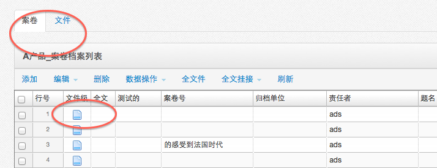
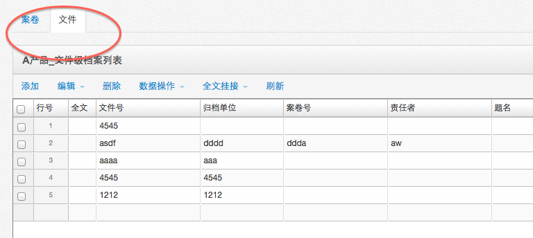
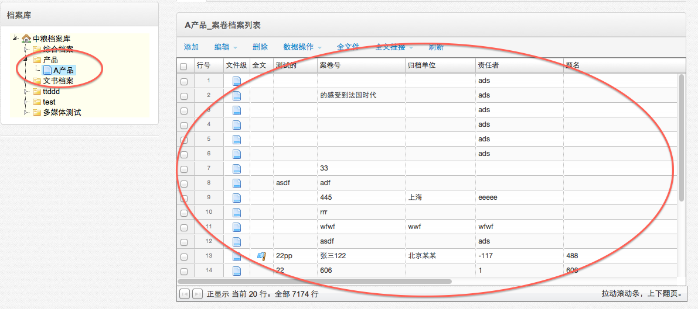
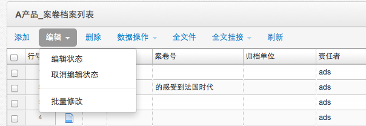
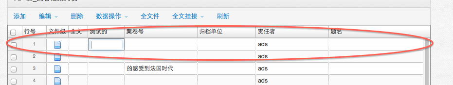
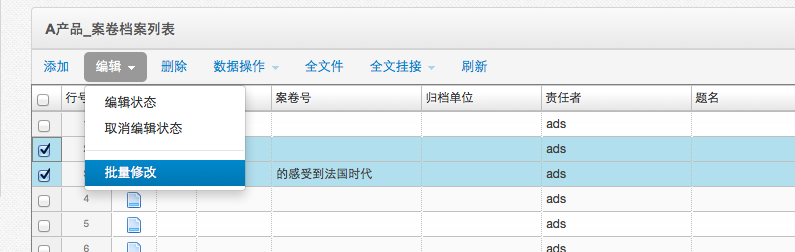
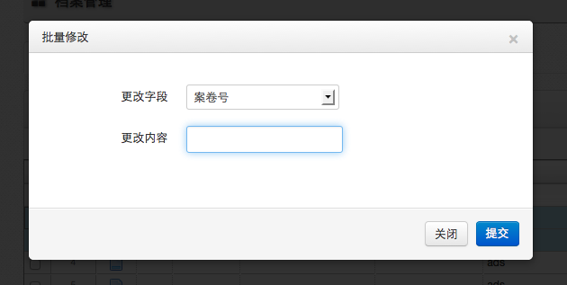

-
- 操作流程
- 点击首页功能菜单［档案管理－档案管理］，打开档案管理页面。
- 档案管理数据基本操作包括档案数据显示、添加、修改、批量修改、删除、全文件。
- 档案数据显示
- 
- 
- 点击左侧的档案节点，右侧显示了该节点下的案卷档案数据列表（如果是纯文件级档案类型，将显示文件级数据）。
- 点击案卷的［文件级］标示，显示案卷级下包含的文件级。
- 档案添加
- 选择左侧的档案节点，右侧显示了该节点下的档案数据列表。
- 
- 
- 点击[添加]按钮，在档案数据列表的第一行，将添加一个新行，双击字段单元格，编辑字段属性，当鼠标点击别处时，系统自动保存。
- 注：新添加的行默认显示在最上面。
- 
- 档案修改
- 点击［编辑－编辑状态］或双击要修改的档案属性单元格，输入新内容，失去焦点，自动保存。编辑状态时，单击单元格即可编辑，可通过［取消编辑状态］恢复双击编辑模式。
- 点击[添加]按钮，在档案数据列表的第一行，将添加一个新行，双击字段单元格，编辑字段属性，当鼠标点击别处时，系统自动保存。
- 档案批量修改
- 
- 
- 勾选档案数据，点击［编辑－批量修改］按钮，打开批量修改框，选择要批量修改的字段属性，输入批量修改值，点击保存按钮。
- 档案删除
- 勾选档案数据，点击［删除］按钮，确认删除后。
- 注意：删除档案数据，将不可恢复，同时删除档案数据挂接的电子全文，请谨慎操作。
- 档案删除
- 勾选档案数据，点击［删除］按钮，确认删除后。
- 注意：删除档案数据，将不可恢复，同时删除档案数据挂接的电子全文，请谨慎操作。
- 全文件
- 点击［全文件］按钮，将显示当前档案节点下所有案卷级包含的文件级数据。